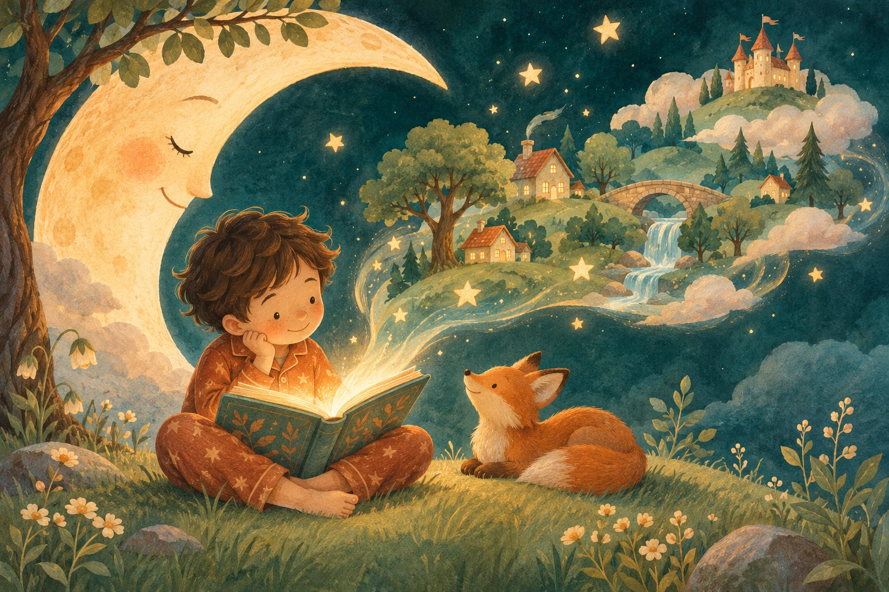

אוספים רגעים
שם, גיל ושלושה דברים שקרו. גם הדברים הכי קטנים יכולים להתחיל הרפתקה.
כל שבוע מסתתר בו סיפור
השן שנפלה. העוגה עם סבתא. החבר החדש.
שלושה רגעים מהשבוע שלהם הופכים לספר לילה טוב, שנכתב במיוחד בשבילם.

פשוט כמו סיפור טוב
לא צריך לדעת לכתוב.
רק לזכור מה עשה את השבוע שלהם.
שם, גיל ושלושה דברים שקרו. גם הדברים הכי קטנים יכולים להתחיל הרפתקה.
הרגעים נשזרים בסיפור בעברית, עם איורים, חברים בדרך ומחשבה טובה לקחת ללב.
מדפדפים יחד, שומרים בספרייה במכשיר, וחוזרים לסיפור גם מחר.
לאן הדמיון ייקח אותנו?
הם יגדלו. השבוע הזה יעבור.
הסיפור יכול להישאר.